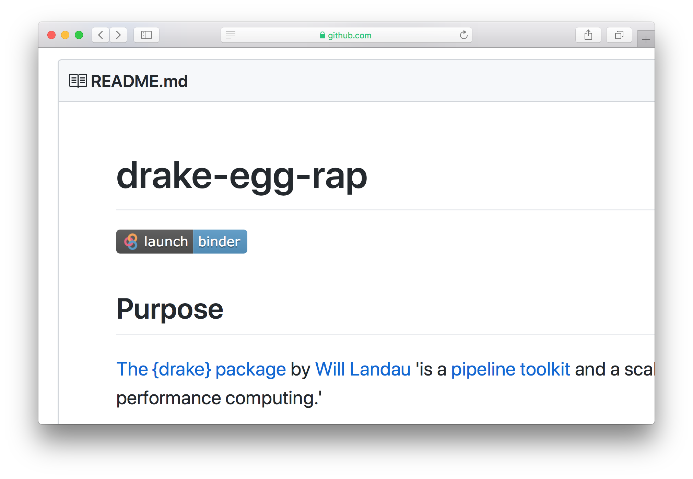
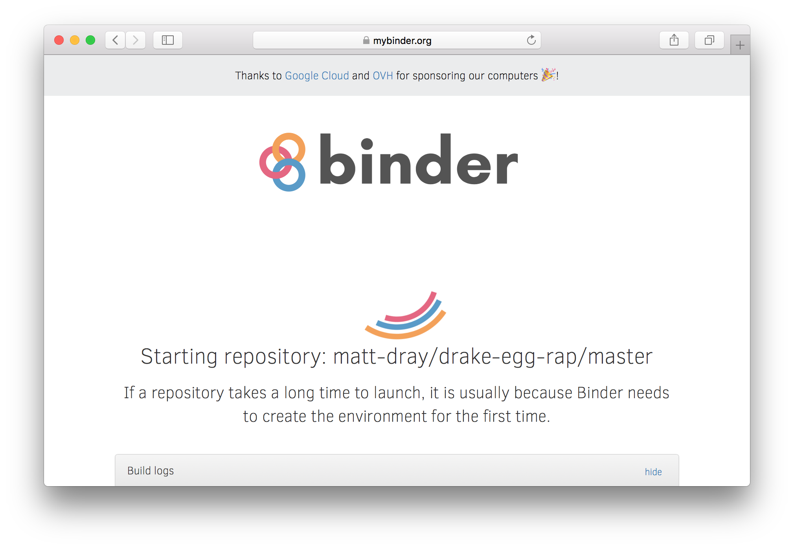
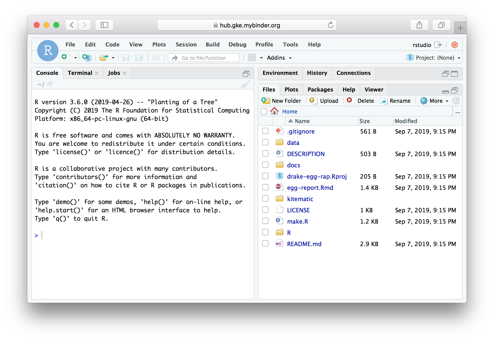

tl;dr
Binder lets people explore your GitHub-based R code in a live, browser-based instance of RStudio – for free. Set-up for R projects is quick with {holepunch}.
I’ve used {holepunch} on my {drake} demo repo. Click the ‘launch binder’ badge in the repo’s README.
Icing on the {drake}
I wrote about how Will Landau’s excellent {drake} package could be used to minimise errors and speed up the production of statistical reports by the UK government. I put a demo of this in a GitHub repo.
There are two things I’d like:
- To improve trust further, citizens should be able to quickly open and explore the code behind a statistical report in the environment that the analyst was actually working in, with the correct R version and package dependencies.
- When I’m demonstrating the {drake} example, everyone in the room should have access to the same, consistent environment. This will minimise technical issues and ensure the code is being run in the intended environment.
Turns out that these issues can be solved with Binder. Point 1 is addressed by adding a special badge to your README. This helps solve Point 2, proven by Landau in his {learndrake} course-in-a-package repo.
But what is Binder?
In a Bind(er)
Binder is an open source project that makes it easier to share and explore the code from a GitHub repository.
The repo owner specifies an environment (e.g. R version and package dependencies) and people can click a badge in the README to launch the code in a live instance of RStudio. Magic.
Here’s what the Binder badge looks like in the README:

Click it to launch the Binder loading page:

That results in RStudio being launched in the browser with all the folders and files from the repo:

Some caveats:
- This may take a short while to load. You may need to retry the build or try a different browser if it fails to load at all.
- It may not be available for free forever.
- There’s a maximum repo size of a couple of gigabytes.
{holepunch}-drunk
But wait: Karthik Ram has made the {holepunch} package so that R users can set up Binder for their repo in a just a few lines of code.
Do read the docs, but after install.packages("holepunch") and library(holepunch):
write_compendium_description() to create a DESCRIPTION file listing the repo’s dependencies (just like what you need for an R package)write_dockerfile() to set up a dockerfile (from The Rocker Project) that installs RStudio and an R version of your choicegenerate_badge() to get some code for a ‘launch binder’ badge that you can copy-paste to your repo’s README
Then you can push the changes to GitHub and the ‘launch binder’ badge will appear your README. Clicking it generates an RStudio instance with the specifications as per the DESCRIPTION and dockerfile.
So, not many steps to achieve something this cool!
Read Karl Broman’s blog post for another view from an R user and check out Karthik Ram’s rstudio::conf 2019 talk (see the slides or watch the video).
Environment
Session info
Last rendered: 2023-07-24 20:40:08 BST
R version 4.3.1 (2023-06-16)
Platform: aarch64-apple-darwin20 (64-bit)
Running under: macOS Ventura 13.2.1
Matrix products: default
BLAS: /Library/Frameworks/R.framework/Versions/4.3-arm64/Resources/lib/libRblas.0.dylib
LAPACK: /Library/Frameworks/R.framework/Versions/4.3-arm64/Resources/lib/libRlapack.dylib; LAPACK version 3.11.0
locale:
[1] en_US.UTF-8/en_US.UTF-8/en_US.UTF-8/C/en_US.UTF-8/en_US.UTF-8
time zone: Europe/London
tzcode source: internal
attached base packages:
[1] stats graphics grDevices utils datasets methods base
loaded via a namespace (and not attached):
[1] htmlwidgets_1.6.2 compiler_4.3.1 fastmap_1.1.1 cli_3.6.1
[5] tools_4.3.1 htmltools_0.5.5 rstudioapi_0.15.0 yaml_2.3.7
[9] rmarkdown_2.23 knitr_1.43.1 jsonlite_1.8.7 xfun_0.39
[13] digest_0.6.33 rlang_1.1.1 evaluate_0.21